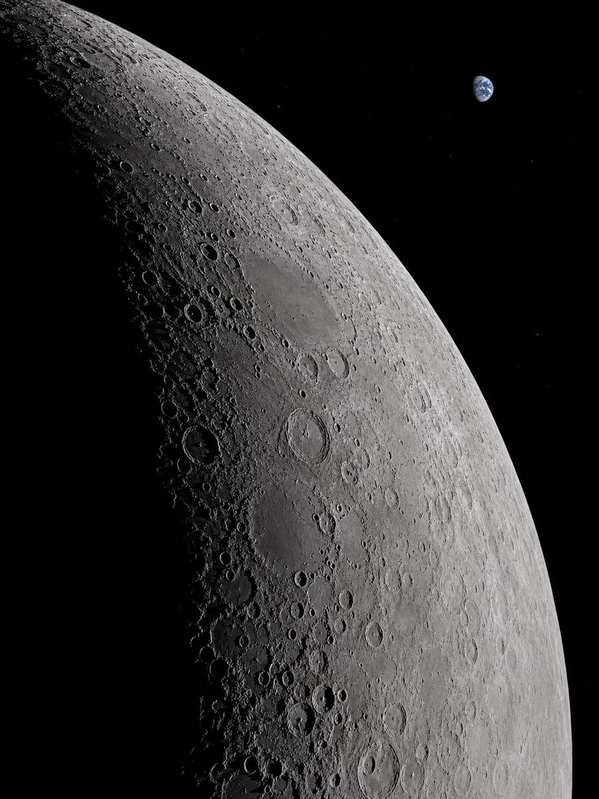

01 / NETWORK
학생 주도 전파천문
공동 연구 체계
SYRTN은 영광 해룡고, 순천고, 순천 복성고의 물리·지구과학 동아리가 관측 장비, 연구 데이터와 기술 기록을 공동으로 관리하는 협력 체계입니다.
영광 해룡고
순천고
순천 복성고
02 / OBSERVATION
관측 자료를 축적하고
연구 결과를 공유합니다.
관측 기록, 기술 문서와 학교별 연구 과정을 체계적으로 보존하여 공동 연구와 후속 관측에 활용합니다.
관측 자료 보기
03 / COLLABORATION